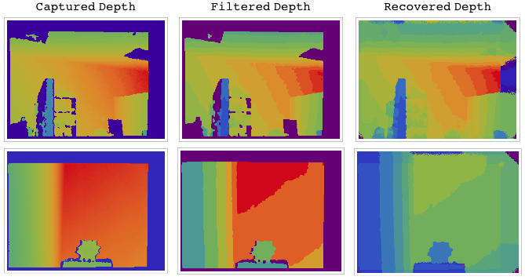

On this page I describe some of the Vision related algorithms that I have implemented.
To detect circles in the image I coded a Generalized Hough Transform that uses the parametrization of a circle. This essentially means that instead of storing 2 parameters per pixel as in the case of Simple Hough Transform, I store 3: x location, y location and radius. Therefore I have a 3D Accumulator matrix. I first find the canny edges of the image. These gradient values will be used in the voting scheme for circle detection. The hough3D function that I implemented goes through the every true pixel in the canny edges. It looks at radius r = 1 to r =169 (lower dim of the image) to see how many circles are possible. Now for every radius value it goes in to see what points this circle would intersect on the image. For each of those points it looks at the gradient of the particular intersected point. It sees whether the gradient is aligned in the direction of the circle. In that case it gets a full vote. As the gradient differs from instantaneous circle gradient the vote value decreases. In addition to this voting scheme I also make sure that the vote values are scaled down for larger radii. I therefore divide each vote value by radius to account for that.

This project presents a technique to estimate missing depth information obtained from the Microsoft Kinect. Due to the limitations of the depth sensing technology used by the Kinect, a significant loss and noise incurs when capturing depth information. The paper describes the steps needed to go from raw depth, as cap- tured by Kinect, to a point cloud representation of the recovered missing data. Our main contribution in this paper is the use of an iterative diffusion method that ac- counts for both the known depth values and RGBD segmentation results to recover missing depth information. The algorithm proposed is highly parallelizable and is capable of being implemented for real-time processing by utilizing the Graphical Processing Unit. The process is divided into 5 stages described below.
Capture image with and without calibration. The white lines denote the edges of the depth capture. Note that in the figure on the right that the edges match with the objects, but one looses information for many pixels during the projection
The captured depth information contains many small missing values. This is due to the inherit inaccuracy resultant from the way the Kinect captures images. The raw captured data contains both noise and missing depth values due to occlusions. To fill in those gaps with use a fast mean filter.
Once the values are quantized, we use QuickShift to segment. QuickShift is a mode seek- ing optimization algorithm, similar to MeanShift, it computes the Parzen density function. Unlike MeanShift, which performs a gradient descent to seek the modes of the distribution, QuickShift uses nearest neighbours. Pixels that converge to the same mode are in the same segment.
The depth recovery is our main contribution in this project. We use an iterative process that prop- agate values from known depth values to unknown depth values in the same segmented cluster. To speed-up the algorithm for large windows, we use a MonteCarlo inspired method of sampling K values. Furthermore, we use a simple Hough voting scheme to estimate the missing depth, with depth values in and out of the segmented cluster voting (with appropriate weight to the vote). So far as we can tell, this algorithm is original.
After depth reconstruction, the depth map is plotted with color information from the RGB image using Mathematica’s graphics language.
Pseudocode: